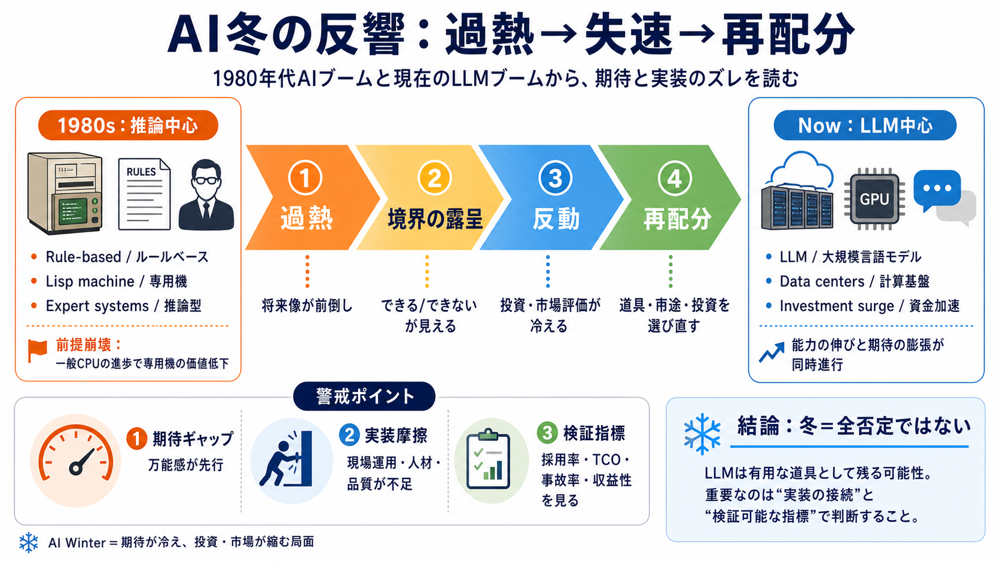

Echoes of the AI Winter | netzhansa
It may be educational to have a look at the first commercial AI hype cycle, which occurred in the 1980s. Like with any n…

It may be educational to have a look at the first commercial AI hype cycle, which occurred in the 1980s. Like with any n…
A second winter followed in the late 1980s and early 1990s, triggered by the collapse of specialist AI hardware markets,…
Three years after Minsky and Schank's prediction, the market for specialized LISP-based AI hardware collapsed. Desktop c…
Home » AIWS History of AI » The History of AI » **This week in The History of AI at AIWS.net – The market for specialise…
# AI Winter: Understanding the Cycles of AI Development | DataCamp. Learn about how data is applied by industry leaders.…